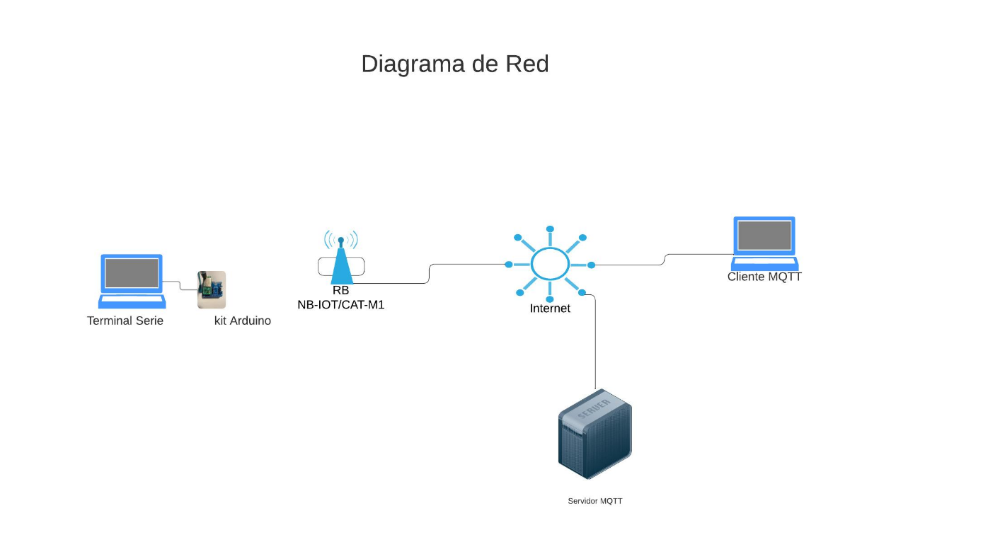

Este proyecto consistió en el desarrollo de un prototipo de IoT utilizando una placa Arduino Zero junto a un kit de desarrollo especializado. Se implementó la conexión a redes móviles Nb-IoT y Cat-M1, aplicando protocolos de comunicación MQTT y programación en C. La actividad combinó trabajo individual teórico sobre tecnologías inalámbricas y prácticas grupales mediante laboratorios de conexión y transmisión de datos.
